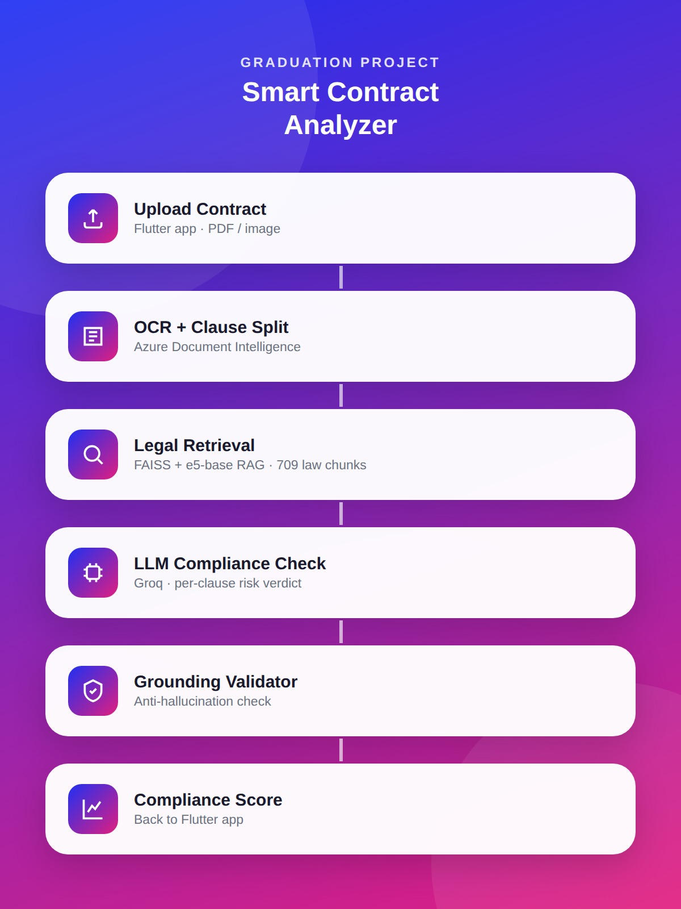
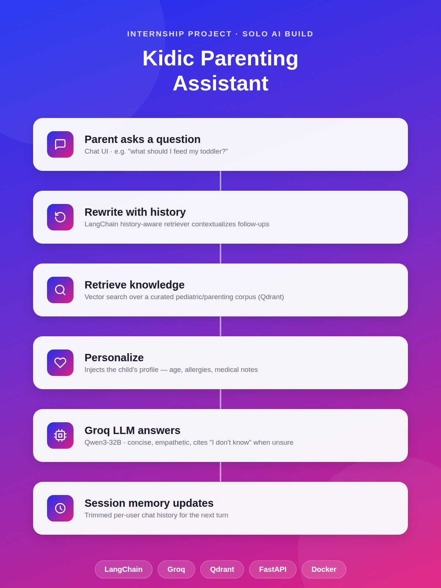
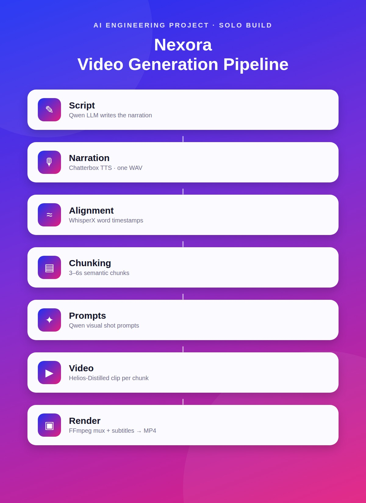
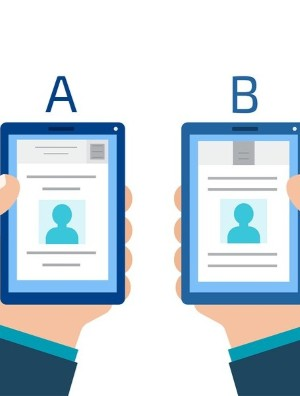

Projects
Smart Contract Analyzer (SmartCA)
Full-stack AI system (FastAPI + Celery backend, Flutter client) that OCRs Arabic employment contracts and checks each clause against Egyptian Labor Law 14/2025 using RAG retrieval and an LLM compliance engine with anti-hallucination grounding. Built with a 6-person team.
Tools: Python, FastAPI, Celery, FAISS/RAG, Groq LLM, Flutter, Azure Document Intelligence
Skills: RAG Pipelines, LLM Evaluation & Precision Tuning, System Architecture, REST APIs, Cross-functional Team Collaboration
View Case Study
Kidic Parenting Assistant (RAG Chatbot)
Retrieval-augmented generation chatbot for Kidic, a parenting/childcare app — built solo during my AI engineering internship at EgronX. Answers pediatric/parenting questions grounded in a curated knowledge base, personalized to each child's profile, with conversational memory and "I don't know" safety guardrails.
Tools: Python, LangChain, FastAPI, Groq (Qwen3-32B), FAISS, Qdrant, Docker
Skills: RAG Pipelines, LLM Integration, Prompt Engineering, Vector Databases, REST APIs, Solo Ownership
View Case Study
Nexora — AI Video Generation Pipeline
A FastAPI backend that turns a topic and a target duration into a fully narrated MP4 through a single API call — orchestrating an LLM script writer, TTS narration, word-level audio alignment, and a video generation model on GPU cloud infrastructure. Solo-built and deployed; 91 of its 92 commits are mine.
Tools: Python, FastAPI, PyTorch, Qwen LLM, Chatterbox TTS, WhisperX, FFmpeg, RunPod GPU Cloud
Skills: Pipeline Orchestration, GPU Deployment, Reliability Engineering, Automated Testing, System Architecture, CI/CD
View Case Study
Customer Segmentation Analysis
Comprehensive customer segmentation analysis using machine learning clustering techniques to identify high-value and low-value customer groups.
Tools: Python, Pandas, Sklearn, Matplotlib, K-Means
Skills: Data Preprocessing, Data Visualization, EDA, Data Manipulation, Storytelling, Business Analysis
A/B and Hypothesis Testing for Marketing Campaign Analysis
I analyzed the effectiveness of two marketing campaigns using A/B testing to determine the most cost-efficient strategy. One campaign was a $50,000 test while the other was a $30,000 control, and I applied hypothesis testing to compare key metrics like user reach, conversion rates, and ROI.
Tools: Python, Pandas, Scipy.Stats, Matplotlib, Seaborn
Skills: A/B Testing, Hypothesis Testing, Storytelling, Data Analysis, Statistical Analysis, Business Analysis

Optimizing Diabetes Prediction through Feature Selection
I worked on a Diabetes Prediction model, where I applied advanced statistical methods and data analysis techniques to optimize the model's performance. The focus was on feature selection to reduce the complexity of the dataset and improve prediction accuracy.
Tools: Python, Pandas, Sklearn, Scipy.Stats, Matplotlib, Seaborn
Skills: Feature Selection, Data Preprocessing, Data Visualization, EDA, Data Manipulation, Storytelling, Business Analysis